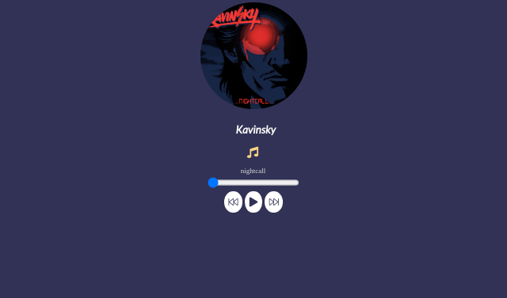

Player music

This project was carried out in pure javascript without any kind of framework or library. It is a music player, which plays the music already stored in the system itself, without any external communication with api. However, there is nothing to prevent it from being integrated with an API in the future.
Technologies used:
- JavaScript clean